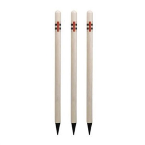
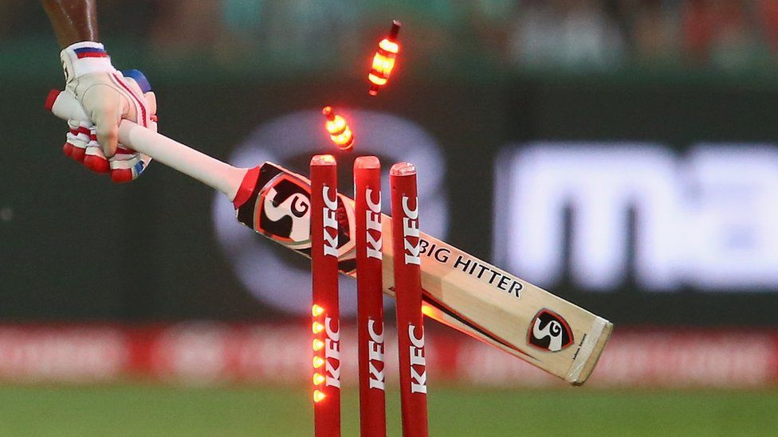
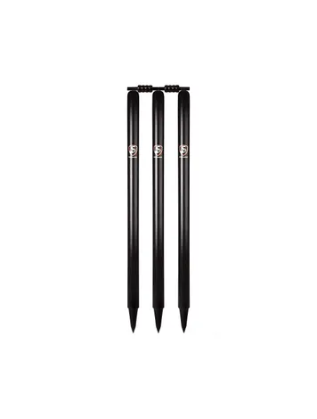

Welcome to Cricket Kit Store
We supply best cricket issentials to future generation cricketers. We are in market from last 25 years with best quality products and we are blessed to have more than 1600+ regular customers and 200+ sports Academy's regular orders.
Bats
Gray Nicolls
₹ 23999.0
Gray Nicolls is one of the best brands in Industry that promote cricketers to use thier logos on the bat.
Kookaburra
₹ 43799.0
We understand that purchasing a new cricket bat can be a little bit tricky, and that’s why we provide an excellent level of customer service at all times.

Cricket Kits
DSC Cricket Kit
₹ 54999.0
In the early 80’s, our family began developing quality bats for many of the world’s top cricket brands.
SG Cricket Kit
₹ 57000.0
Sanspareils Greenlands (SG) is world’s largest and most trusted cricket equipment company. The company was established in pre-independent India in 1931 by two brothers Kedar Nath Anand & Dwarka Nath Anand.
MRF cricket Kit
₹ 62989.0
MRF's association with sports in India, especially cricket, goes all the way back to the 1980s. We took it to the next level in the 1990s when some of the world's best batsmen wielded bats sponsored by us, playing unforgettable knocks that swept you through a whole range of emotions.
Stumps

Gray-Nicolls Stumps
₹ 2999.0
Gray-Nicolls cricket stumps are some of the best available. Designed by our product specialists, our cricket stumps have become the stump of choice for the ICC in all their competitions around the world including Cricket World Cup.

KFC Stumps
₹ 1999.0
KFC is a food brand that sells non veg and veg foods to customers and sponsers cricket as well with its name on kits and stumps.

SG Stumps
₹ 2500.0
Sanspareils Greenlands (SG) is world’s largest and most trusted cricket equipment company. The company was established in pre-independent India in 1931 by two brothers Kedar Nath Anand & Dwarka Nath Anand. It started primarily as an export intensive manufacturing unit.
Gray-Nicolls Stumps
₹ 2999.0
Gray-Nicolls cricket stumps are some of the best available. Designed by our product specialists, our cricket stumps have become the stump of choice for the ICC in all their competitions around the world including Cricket World Cup.
KFC Stumps
₹ 1999.0
KFC is a food brand that sells non veg and veg foods to customers and sponsers cricket as well with its name on kits and stumps.
SG Stumps
₹ 2500.0
Sanspareils Greenlands (SG) is world’s largest and most trusted cricket equipment company. The company was established in pre-independent India in 1931 by two brothers Kedar Nath Anand & Dwarka Nath Anand. It started primarily as an export intensive manufacturing unit.